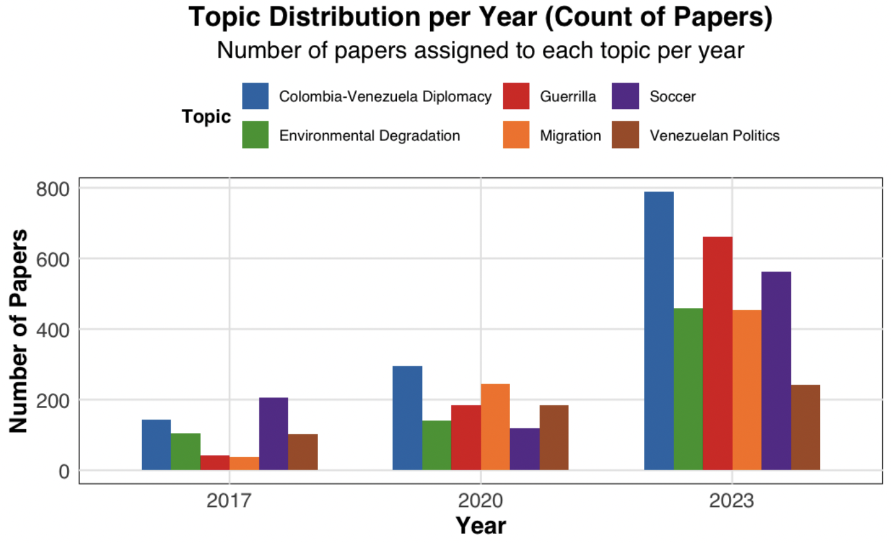

#terms(lda_model, 20)Venezuela-Colombia Relations through the News: A Topic Modeling Analysis
Introduction
This project is inspired by the intricate historical and ongoing dynamics of Venezuela-Colombia relations, particularly in the context of migration, political tensions, and economic challenges.This relationship has been shaped by significant historical events that have deeply influenced migration patterns, political tensions, and economic ties. In the 1980s, the internal conflicts in Colombia and Venezuela’s oil boom led to a massive influx of Colombians seeking refuge in Venezuela, with an estimated 4-5 million Colombian migrants. However, in the 2000s, political tensions escalated as Venezuela’s left-wing president openly supported Colombian guerrilla groups, further straining relations. The humanitarian crisis in Venezuela sparked a massive migration flow from 2017 to 2019, with millions of Venezuelans seeking refuge in Colombia. By 2022, Venezuela had the second-largest refugee crisis in the world, with approximately 7.7 million displaced people, and Colombia hosted around 2.8 million of these migrants. That same year, Colombia’s first left-wing president, Gustavo Petro, was elected and worked to re-establish diplomatic ties with Venezuela, signaling a shift in the political landscape and opening new opportunities for cooperation in addressing migration and economic challenges. This dynamic history of migration, political conflict, and economic disparity inspired my project, which aims to examine how these factors continue to shape the lives of individuals and the relationship between the two countries.
By focusing on a large corpus of news articles from Colombian newspapers like El Tiempo and El Espectador, the project seeks to computationally analyze how these factors have manifested in media narratives over time. The use of topic modeling, specifically Latent Dirichlet Allocation (LDA), will allow us to identify and track the key themes that have shaped the discourse around Venezuela and Colombia, providing insights into how political events, economic crises, and migration trends have influenced public perception and bilateral relations. Through this analysis, the project aims to uncover the evolving nature of their relationship and explore the role of media in framing these complex dynamics.
Research Question:
What are the main themes discussed in Colombian newspapers about Venezuela-Colombia relations and how do they change in response to significant historical/political events?
Data Source:
The data for this analysis consists of newspaper articles from El Tiempo and El Espectador, covering the years 2017, 2020, and 2023.
Data and Methodology
Data Collection and Preprocessing:
- Data Extraction: Articles were extracted from PDF files using
pdftoolsand other relevant libraries. - Text Cleaning: Text was cleaned by removing stop words, punctuation, and special characters.
- Tokenization: Text was tokenized into individual words.
- Lemmatization: Words were lemmatized to their root forms using a Spanish lemmatizer.
Topic Modeling:
Topic Modeling
Document-Term Matrix (DTM): A Document-Term Matrix (DTM) was created to represent the occurrence of words in each document. The DTM is a matrix where rows represent documents and columns represent unique words from the corpus.
Optimal Number of Topics: We used model fitness scores to validate the optimal number of topics for LDA. Specifically, the
FindTopicNumber()function from theldatuningpackage was applied. This function allows for the input of multiple values for the number of topics (k) and calculates four different model fitness scores simultaneously: Griffiths2004, Deveaud2014, CaoJuan2009, and Arun2010. The use of multiple fitness scores provided a comprehensive approach to determining the optimal number of topics for the LDA model.
Griffiths2004: Aims to identify coherence.
Deveaud2014: Reflects interpretability.
CaoJuan2009: Measures distinctiveness.
Arun2010: Analyzes topic separation.

LDA Model: A Latent Dirichlet Allocation (LDA) model was fitted to the DTM to identify latent topics. LDA is a probabilistic model that discovers topics by analyzing patterns of word co-occurrence across documents. Each topic is characterized by a set of words that frequently appear together, and each document is a mixture of these topics. LDA assigns a topic to each document based on the probability of word co-occurrence.
Topic Interpretation and Refinement: After identifying the latent topics, in consultation with Prof. Busse-Cárdenas, additional analysis was performed to ensure that meaningful themes emerged from the model. The identified topics were interpreted by examining the most frequent words associated with each topic in the context of Venezuela-Colombia relations.
- Time-Series Analysis: To observe how the prominence of different topics evolved over time, a time-series analysis was conducted. This involved tracking the load of topics across different time periods, based on the frequency with which words associated with each topic appeared in the articles. Each document was assigned to the topic with the highest probability gamma value and the number and percentage of articles corresponding to each topic were tracked annually. This approach, similar to methods used by Roh and Yang (2019), helped identify shifts in public discourse and media representation over time, especially in relation to key political, economic, and migration-related events.
Results and Discussion
General Topic Identification and Interpretation: 1st LDA
| Topic 1 | Topic 2 | Topic 3 | Topic 4 | Topic 5 | Topic 6 |
|---|---|---|---|---|---|
| años (years), colombia (Colombia), vida (life), ser (to be), tiempo (time), solo (only), cómo (how), hace (does), día (day), así (so), persona (person), gente (people), vez (time), historia (history), país (country), hacer (to do), mundo (world), bogotá (Bogotá), cada (each), después (after) | presidente (president), petro (Petro), venezuela (Venezuela), gobierno (government), maduro (Maduro), colombia (Colombia), dijo (said), oposición (opposition), nicolás (Nicolás), país (country), elecciones (elections), nacional (national), gustavo (Gustavo), política (politics), guaidó (Guaidó), campaña (campaign), benedetti (Benedetti), electoral (electoral), político (political), tiempo (time) | venezuela (Venezuela), eln (ELN), colombia (Colombia), paz (peace), fiscalía (prosecutor’s office), gobierno (government), según (according to), grupo (group), policía (police), justicia (justice), farc (FARC), autoridades (authorities), persona (person), general (general), país (country), caso (case), unidos (United States), corte (court), dijo (said), fiscal (prosecutor) | colombia (Colombia), brasil (Brazil), argentina (Argentina), américa (America), selección (selection), venezuela (Venezuela), equipo (team), tiempo (time), chile (Chile), grupo (group), partido (party), mundial (world), ecuador (Ecuador), uruguay (Uruguay), perú (Peru), gda (GDA), fútbol (soccer), diarios (newspapers), copyright (copyright), reservados (reserved) | colombia (Colombia), persona (person), país (country), migrantes (migrants), venezuela (Venezuela), venezolanos (Venezuelans), ciento (percent), salud (health), según (according to), frontera (border), migración (migration), países (countries), millones (millions), año (year), coronavirus (coronavirus), población (population), casos (cases), unidos (United States), situación (situation), merlano (Merlano) | colombia (Colombia), países (countries), país (country), venezuela (Venezuela), unidos (United States), gobierno (government), américa (America), política (politics), región (region), presidente (president), puede (can), internacional (international), ser (to be), mundo (world), trump (Trump), años (years), parte (part), biden (Bide |
Inter-Topic Distance: The relationships between topics were visualized using an inter-topic distance map.
Top Terms and Themes: “Soccer”, “Venezuelan Politics”, “Colombia-Venezuela Diplomacy”, “Migration”, “Environmental Degradation”, “Guerrilla”

This bar graph displays the number of papers assigned to each topic across the years 2017, 2020, and 2023. The topics include Colombia-Venezuela Diplomacy, Guerrilla, Soccer, Environmental Degradation, Migration, and Venezuelan Politics. The height of each bar represents the count of papers discussing a specific topic in a given year. Brief Analysis
Overall, there are more articles published in 2023 compared to 2017 and 2020, leading to a general increase across all topics. However, the proportions of topics have shifted over time. For example, topics like Colombia-Venezuela Diplomacy and Guerrilla showed significant increases in 2023, while Environmental Degradation and Venezuelan Politics remained more stable relative to other topics. This indicates a growing emphasis on international relations and conflict in the later years.
Topic Identification and Interpretation within “Migration: 2nd LDA
| Topic 1 | Topic 2 | Topic 3 | Topic 4 | Topic 5 | Topic 6 | Topic 7 | Topic 8 |
|---|---|---|---|---|---|---|---|
| israel, gaza, hamás, mundo, guerra, presidente, persona, franja, palestino, unidos, dijo, según, israelíes, conflicto, noticias, gobierno, palestinos, ataque, país, israelí | venezolanos, persona, migrantes, autoridades, ciudad, país, dijo, según, frontera, años, policía, grupo, gobierno, colombia, tiempo, centro, crisis, venezolano, zona, derechos | migrantes, persona, darién, migración, dijo, selva, colombia, dólares, panamá, unidos, día, frontera, años, llegar, días, ruta, solo, año, cada, hacia | colombia, venezolanos, migrantes, migración, país, población, persona, frontera, gobierno, millones, situación, venezolana, países, crisis, migratoria, colombianos, cúcuta, migrante, según, internacional | coronavirus, salud, país, casos, covid, pandemia, colombia, persona, gobierno, medidas, virus, países, cuarentena, presidente, días, brasil, caso, autoridades, emergencia, según | bogotá, aire, ciudad, calidad, colombia, salud, puede, nacional, pasaporte, san, guajira, capital, alerta, secretaría, país, condiciones, según, debe, cuenta, estudiantes | persona, mujeres, derechos, colombia, violencia, años, niños, país, salud, casos, situación, población, humanos, informe, niñas, ser, víctimas, parte, solo, año | unidos, colombia, méxico, migrantes, persona, países, país, frontera, colombianos, asilo, visa, año, gobierno, título, biden, migración, américa, según, tiempo, derechos |
- Top Terms and Themes: “Gaza”, “Colombia-Venezuelan Border Security”, “Darien Migration Route”, “Venezuela Migration Crisis”, “COVID-19”, “Health”, “Migrant Human Trafficking”, “Venezuelan Migrants-US”
The bar graph illustrates the distribution of papers assigned to each topic across three years: 2017, 2020, and 2023. Topics include Colombia-Venezuelan Border Security, the Darien Migration Route, COVID-19, Health, Gaza, Migrant Human Trafficking, Venezuelan Migration Crisis, and Venezuelan Migrants to the United States. Each bar’s height represents the number of papers discussing a specific topic in a given year. The graph highlights shifting focus over time, with COVID-19 dominating coverage in 2020 and a significant increase in articles related to Venezuelan Migrants to the US in 2023. Meanwhile, topics like the Darien Migration Route and Migrant Human Trafficking gained more attention in 2023 compared to earlier years, reflecting the evolving priorities in migration-related reporting. “Gaza” and “Venezuelan Migrants to the US” are topics that gained relevance in 2023. However, there are some articles in previous years
Topic Evolution Over Time:
- Topic Distribution: The distribution of topics across different years was analyzed to identify trends and shifts.
- Time Series Analysis: Time series analysis was used to track the evolution of topics over time.
Document-Level Analysis:
- Topic Assignments: Documents were assigned to topics based on their content.
- Representative Documents: The most representative documents for each topic were identified and analyzed.
Comparative Analysis:
- Newspaper Comparison: The dominant topics in El Tiempo and El Espectador were compared to identify differences and similarities.
Conclusion
[Summarize the key findings and their implications. Discuss the limitations of the study and potential future research directions.]
Appendix (Optional)
- Code Snippets: Include relevant R code snippets for data cleaning, preprocessing, topic modeling, and visualization.
- Additional Visualizations: Provide additional visualizations, such as word clouds, bar charts, and network diagrams.
- Technical Details: Discuss specific implementation details, such as hyperparameter tuning and model evaluation metrics.